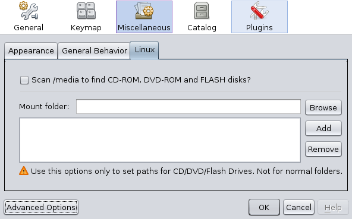

Em Linux não é possível, até ao momento, determinar quais as drives correspondentes a dispositivos de CD-ROM/DVD-ROM, FLAHS, discos externos, etc. Para contornar este problema, existe na secção de opções, um conjunto de definições que pode usar para configurar quais as pastas que deseja que sejam identificas como dispositivos a ler.
